-
- 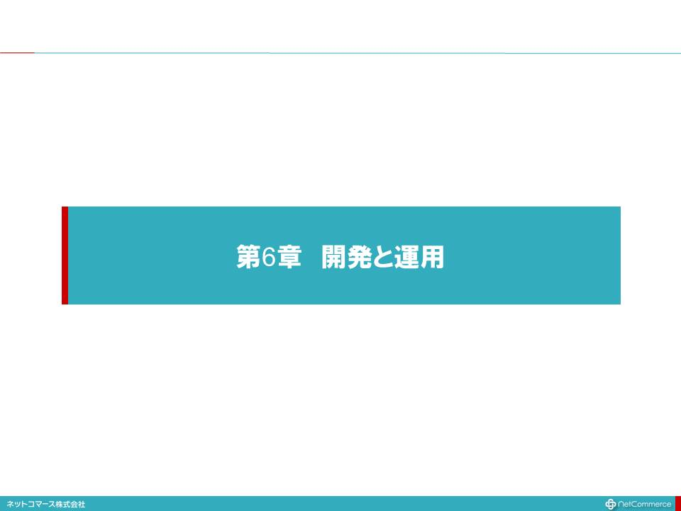
- これからのシステム開発
- 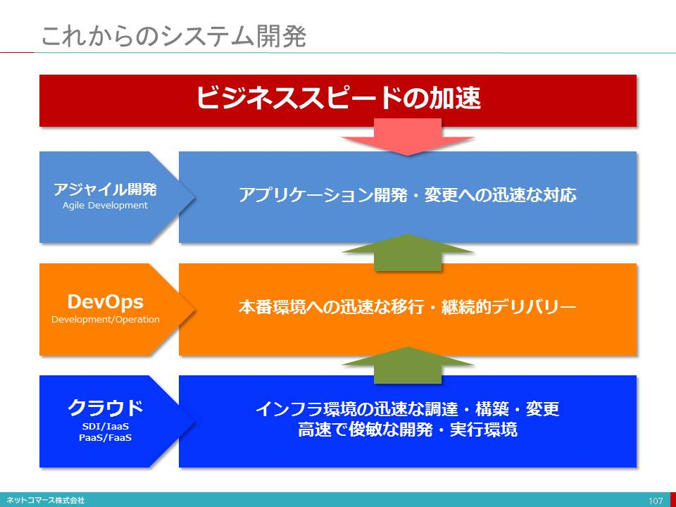
- ビジネス環境は不確実性を増し、変化のスピードは加速しています。ビジネスはこの変化に柔軟・迅速に対応できなくてはなりません。そんな変化への即応力こそが、強い経営基盤となるのです。
- そんなビジネスは、ITとの一体化がすすんでいます。もはやITは、ビジネス・プロセスを支える基盤として欠かすことのできない存在です。もしITが使えなければ、ビジネス活動が大混乱に陥り、業務が停止してしまうかもしれません。また、ITを武器にビジネスを差別化する「デジタル・ビジネス」への取り組みも拡大しています。そうなると、ビジネス環境の変化に、柔軟・迅速に対応するためには、ITもまた、同じスピードで対応できなければなりません。
- このような状況にあって、
- 時間をかけて業務要件を定義し、仕様を固める。
- 工数と見積金額で競合させて業者を選定する。
- 仕様凍結し、その仕様書に従ってコーディングとテストを行う。
- 数ヶ月を経て、ユーザーにリリースし、改修箇所・追加機能を洗い出す。
- 改修作業や機能の追加、変更のために作業する。
- インフラや実行環境を、アプリケーションに合わせて構築・調整する。
- 十分なテストを行った後、ユーザーにリリースする。
- こんなやり方で、加速するビジネス・スピードに対応することはできないのです。
- ビジネス・スピードが緩やかだった時代は、このようなやり方でも対応できました。しかし、ビジネス・スピードが加速し、日々めまぐるしく変化するいま、業務要件も日々変わってしまいます。あるいは、業務要件も決まらない先に、開発を先行しなければならないこともあります。さらに、インフラやプラットフォームの仕様をアプリケーションに合わせて決定し、調達、構築していては、開発途中でアプリケーションの仕様が変わっても対応できません。もはや従来までのやり方では、いまのビジネス・スピードに対応できないのです。
- 「仕様書や手順に従い情報システムを開発・運用することではなく、情報システムを使ってビジネスの成果に直接貢献する」
- そんな取り組みが求められています。そのためには、次の３つの条件を満たさなくてはなりません。
- ビジネス・ニーズに迅速に対応でき、その変更にも柔軟に対応できること。
- アプリケーションでの変更を、直ちに本番環境に反映できること。
- 予期せぬ負荷の増大や縮小に直ちに対応できること。
- この条件を満たすために、次のような取り組みが始まっています。
- ■アプリケーション開発・変更に迅速に対応するアジャイル開発
- アジャイル開発が生まれるきっかけは、1986年に経営学者である野中郁次郎と竹内弘高が、日本の製造業の高い効率と品質を研究した論文をハーバード・ビジネスレビュー誌に掲載したことにあります。それを読んだジェフ・サザーランド（Jeff Sutherland）らが、システム開発への適用を考え、1990年代半ばにアジャイル開発の方法論としてまとめました。
- ですから、アジャイル開発には、伝統的な日本の「ものづくり」にある、「不断の改善により、品質と生産性の向上を両立させる」という精神が、埋め込まれているといっても良いでしょう。
- その精神の根本には、現場重視の考え方があります。現場とは、「業務」と「製造」の現場です。
- 「業務の現場」であるユーザーと「製造の現場」である開発チームが、ビジネスでどのような成果をあげたいのか、そのために何をしたいのか、その優先順位や使い勝手はどうなのかを共有し、不断の工夫と改善によって無駄を省き、迅速・柔軟に、コストを掛けずに高品質なシステムを開発しようというのです。
- 「仕様書通りのシステムを手間暇掛けて開発し、工数を稼ぐ」ビジネスとは相容れません。少ない工数と短い期間で、ビジネスの成果に直ちに貢献できるシステムを開発する。アジャイル開発は、そんな取り組みと言えるでしょう。
- ■本番環境への迅速な移行、継続的なデリバリーを実現するDevOps
- 開発チームが、アプリケーションの開発や変更に即応できても、本番環境に反映できなければ、その成果を業務の現場が享受することはできません。一方、運用チームは、システムを安定稼働させる責任を負っています。開発できたからといって、すぐに受け入れて本番環境に移行させることで、安定稼働ができないとなると大問題です。そこで慎重に検証し、システムの調達や設定などの対応をし、大丈夫となれば本番移行を受け入れます。それには相応の時間が必要であり、加速するビジネスのスピードに対応できません。
- そこで、開発チーム（Development）と運用チーム（Operations）が、お互いに協調し合い、また運用や本番移行を自動化する仕組みなどを積極的に取り入れ、開発と運用が途切れることなく連続する仕組みを実現し、ビジネスを止めずに、継続的にデリバリーする取り組み「DevOps」が、注目されています。
- ■迅速な調達を実現するインフラ、高速開発と実行を支えるプラットフォーム
- DevOpsを実現するためには、インフラ資源の調達・変更も柔軟・迅速でなくてはなりません。そのためにサーバーやストレージなどの物理資源を個々のアプリケーションに合わせて導入、設定している余裕はありません。そこでインフラはSDIや、そのクラウド・サービスであるIaaSが前提となります。
- それでもまだインフラを意識して、アプリケーションを開発しなくてはなりません。そんなことに気をかけることなく開発、実行できれば、その柔軟性と迅速性は高まります。
- そのためには予め用意された機能部品を組合せ、連係させてアプリケーションを開発実行させる仕組みや、業務プロセスを記述し、画面や帳票を定義すれば、プログラム・コードを生成してくれるツールなども登場し、開発スピードだけではなく、変更への柔軟性を担保できるようになりました。
- こんな様々な取り組みが、これからの開発や運用を支えようとしています。
- アジャイル開発（1）
- 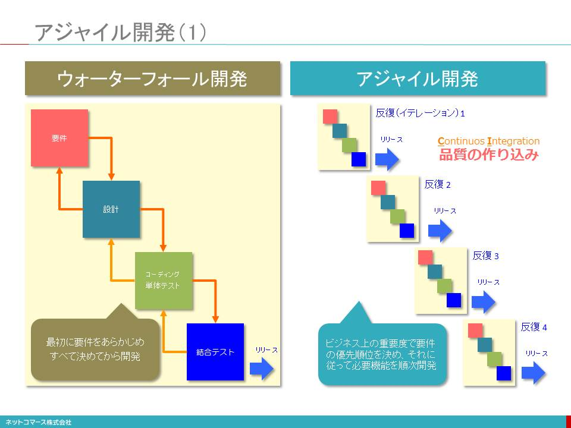
- 【図解】コレ１枚でわかるアジャイル開発
- ユーザーの要求は時間とともに変化します。ビジネス・スピードが加速するなか、この要求が変化するスピードもまた速まっています。いま、情報システムの開発には、このような変化への即応性がこれまでになく求められているのです。
- しかし、従来は、作るべきシステムの要件を「すべて」決めてしまってから開発をスタートする「ウォーターフォール」手法が主流でしたが、このようなやり方では対応できない事態も増えてきたのです。そこで、注目されているのがアジャイル開発です。
- アジャイル開発の本質は、「全部作らない」ことです。これが、ウォーターフォール開発と本質的に異なる点です。アジャイル開発は、「業務上必要性が高い機能や業務プロセスを選別し、優先順位を決めて、そこにリソースを傾注することで、本当に使うシステムのみを作り上げよう」という考え方です。結果として、短期間、高品質での開発が実現するのです。
- 一方、ウォーターフォール開発は、「全部作る」を前提とします。そのため、ユーザーの要求がすべて決まらなければ開発に着手できません。そのため、将来使うかもしれない機能とともに、推測を交えて仕様を固めてゆきます。また、いったん作り始めると、途中で変更することは難しく、すべてを作り上げることが優先されます。変更や品質保証は全部コードを書き終えた最後の最後に対応しなければなりません。
- アジャイル開発の手法を使っても、「全部作る」のであれば、ウォーターフォールと本質的には何も変わりません。アジャイル開発は「全部作らない」かわりに、短期間・高品質・変更への柔軟性を担保しようというもので、「全部作る」こととトレードオフの関係にあのです。
- アジャイル開発では、「ビジネス価値の高い＝業務を遂行上必須」のプロセスを実現する機能に絞り込んで開発対象を決めてゆきます。「必要かどうかわからない」、「あったほうがいいかもしれない」は、作りません。そして、おおよその工数と期間の見通しを立てて開発を始めます。
- ビジネス価値で優先順位を決められた機能を順次完成させてゆくため、途中で優先順位が変われば入れ替えることができるので、変更要求に柔軟に対応できるのです。
- 重要なところから完成させるので、重要なところほど早い段階から検証されバグは徹底して潰されます。また、後期になるほど重要度が低くなるので、問題が生じても全体への影響は少なく品質は高まります。
- アジャイル開発の狙いを整理すれば、次の３つになるでしょう。
- 予測できない未来を推測で決めさせず、本当に使うシステムだけを作ることでムダな開発投資をさせない。
- 変更要求に柔軟に対応し、納得して使えるシステムを実現する。
- 納得できる予算と期間の中で最善の機能と品質を実現する。
- そもそもアジャイル開発が生まれるきっかけは、1986年に日本の経営学者である野中郁次郎氏と竹内弘高氏が、日本の製造業の高い生産性と効率を研究した論文をハーバード・ビジネスレビュー誌に掲載したことにあります。それを読んだジェフ・サザーランド（Jeff Sutherland）氏らが、システム開発への適用を考え、1990年代半ばにアジャイル開発の方法論としてまとめました。ですから、アジャイル開発には、伝統的な日本の「ものづくり」にある、「不断の改善により、品質と生産性の向上を両立させる」という精神が、埋め込まれているといっても良いでしょう。
- アジャイル開発（2）
- 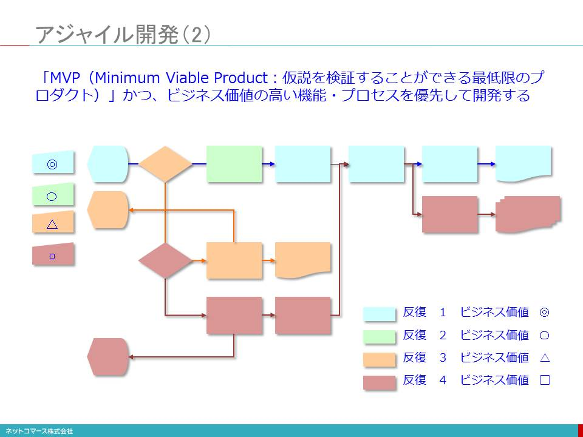
- 超高速開発ツール
- 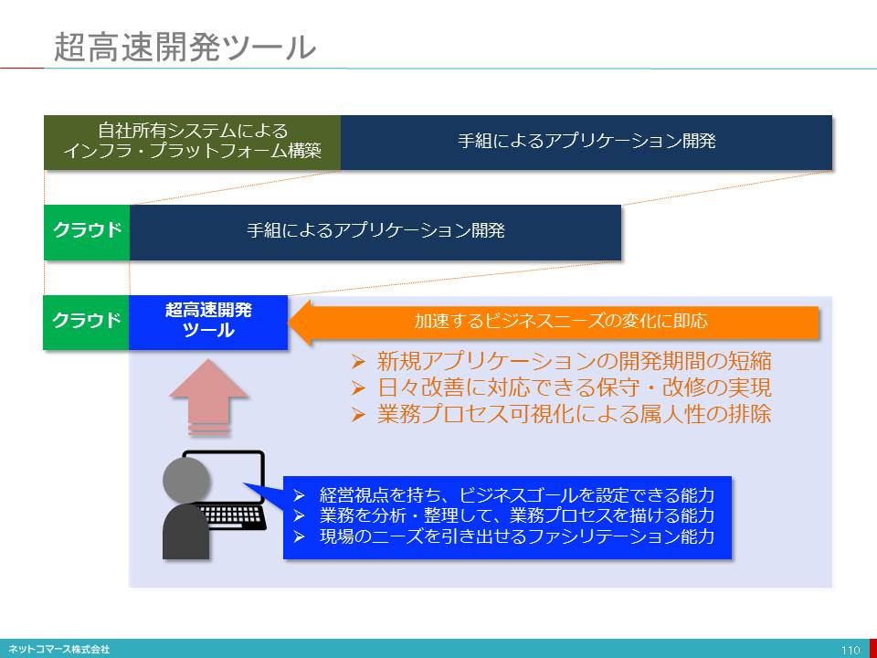
- DevOpsとは何か？
- 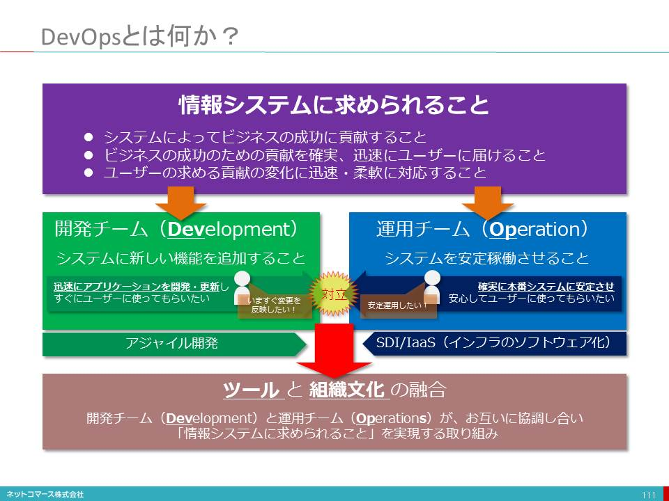
- DevOpsとコンテナ管理ソフトウェア
- 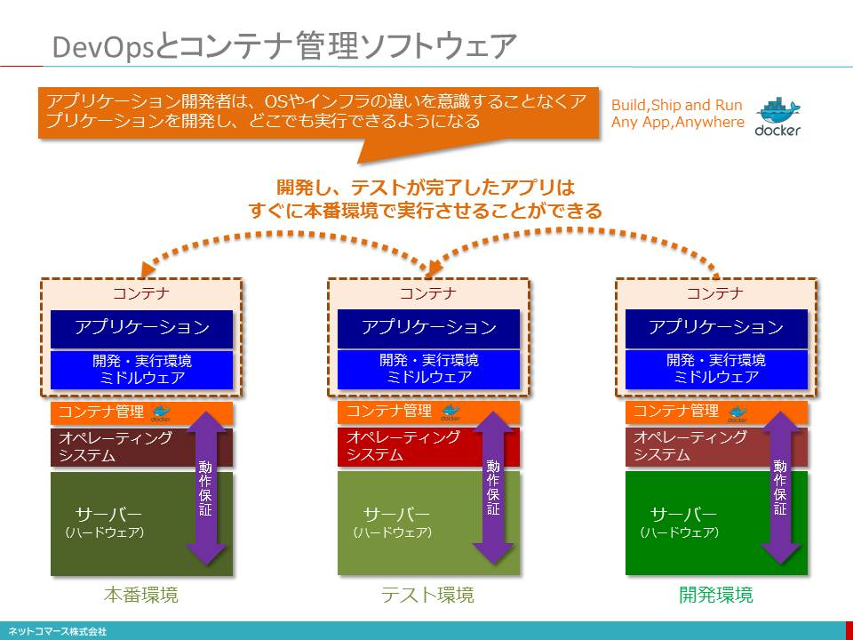
- 【図解】コレ１枚でわかるDocker
- コンテナ管理ソフトウェアが、ハードウェアやOS毎の違いを吸収してくれるため、既にアプリケーションやミドルウェアの稼働が確認されているコンテナであれば、他のサーバーに移して動かしても確実に動くことが保証されます。
- <参照>【図解】コレ１枚で分かる仮想マシンとコンテナの違い
- この特性を利用すれば、アプリケーション開発者は、OSやインフラの違いを意識することなく、アプリケーションを開発することができます。また、運用管理者は、「コンテナ管理ソフトウェア」でOSやインフラの安定稼働を保証しておけばいいわけで、これまでのようにアプリケーション開発者と運用管理者がアプリケーション毎に本番環境への移行を個別に相談し対応しなくてもよくなります。
- アプリケーション開発者は迅速にアプリケーションを開発、変更しユーザーに提供する、一方、運用管理者はシステムを安定稼働させるといったそれぞれの責任を独立して果たすことができるようになり、本番環境へのデプロイメント（移行作業）は迅速、頻繁に行えるようになり、アプリケーション開発や変更のメリットをユーザーが直ちに享受できるようになるのです。
- このようなコンテナを実現する「コンテナ管理ソフトウェア」のひとつとして、ほぼ業界標準となっているのがDocker社の提供する「Docker」です。
- Dockerが注目されるようになったのは、Dockerで動作が保証されているコンテナを生成する設定を「Dockerfile」として公開し、それを他のユーザーと共有できる仕組みを設けた点にあります。これによって、他のユーザーが作ったソフトウェアとそれを動かす手順を他のサーバーでもそのまま再現できるようになったことです。そのためハイブリッド・クラウドやマルチ・クラウドといった異なるOSやインフラでも動作保証される便利さが注目されているのです。
- このような機能を持つDockerは、AWSやGoogleなどのクラウド・サービス・プロバイダーをはじめ、VMware、IBM、Dell、Red Hatなどの大手ITベンダーが採用を表明しています。またDockerは、もともとはLinux用に作られたものですが、MicrosoftもWindows Serverや自社のクラウドサービスであるAzure Platformでの採用を表明しており、コンテナ管理ソフトウェアとして広く普及しつつあります。
- Immutable Infrastructure と Infrastructure as Code
- 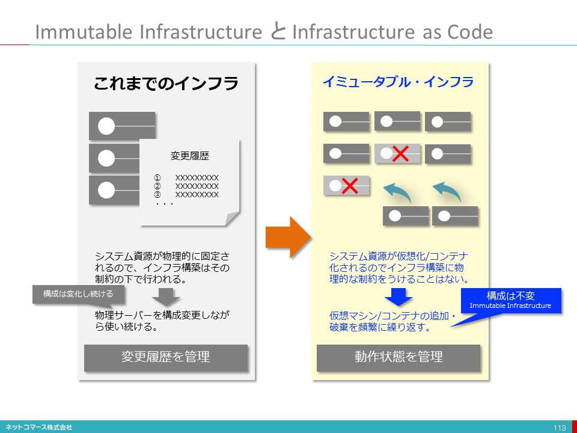
- マイクロサービス（Microservices）
- 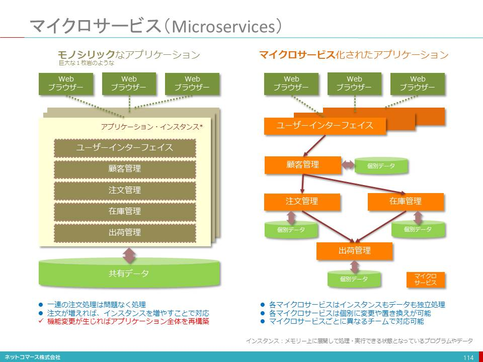
- ソフトウェアは様々な機能を組み合わせることで、必要とされる全体の機能を実現します。
- 例えば、オンライン・ショッピングの業務を処理するソフトウェアは、ユーザー・インタフェースとビジネス・ロジック (顧客管理、注文管理、在庫管理など) という特定の業務を処理する機能を組合せることで実現します。必要なデータは、すべてのロジックで共有するデータベースに格納され、各ロジックはひとつのソフトウェアの一部として組み込まれます。もし、複数の注文があれば、その注文の単位でソフトウェアを並行稼働させることで対応できます。このようなソフトウェアをモノシリック（巨大な一枚岩のような）と呼びます。
- ただ、このやり方では、商品出荷の手順や決済の方法が変わる、あるいは顧客管理を別のシステム、例えば外部のクラウド・サービスを利用するなどの変更が生じた場合、変更の規模の大小にかかわらず、ソフトウェア全体を作り直さなければなりません。また、変更を重ねるにつれて、当初きれいに分かれていた各ロジックの役割分担が曖昧かつ複雑になり、処理効率を低下させ、保守管理を難しいものにしてゆきます。さらにビジネスの拡大によって注文が増大した場合、負荷が増大するロジックだけ処理能力を大きくすることはできず、ソフトウェア全体の稼働数を増やさなくてはならず、膨大な処理能力が必要となってしまいます。
- このようにビジネス環境が頻繁に変わる世の中にあっては、このやり方での対応は容易なことではありません。
- この課題に対応しようというのが、マイクロサービス方式です。このやり方は、ソフトウェアを互いに独立した単一機能の部品に分割し、それらを連結させることで、全体の機能を実現しようとするもので、この「単一機能の部品」をマイクロサービスと呼びます。
- 個々のマイクロサービスは他とはデータも含めて完全に独立しており、あるマイクロサービスの変更が他に影響を及ぼすことはありません。その実行も、それぞれ単独に実行されます。
- この方式を採用することで、機能単位で独立して開発・変更、運用が可能になること、また、マイクロサービス単位で処理を実行させることができるので、処理量の拡大にも容易に対応することができます。
- イベントドリブンとコレオグラフィ
- 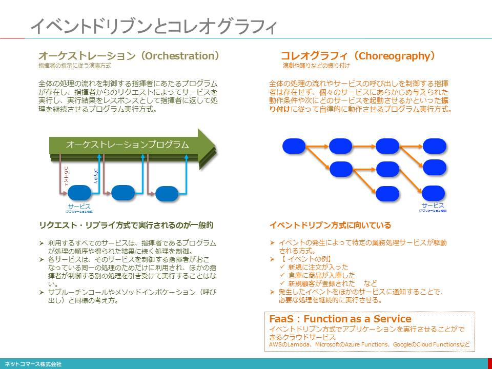
- 【図解】コレ１枚で分かるイベント・ドリブン方式
- ある業務で一連のサービス（特定の業務を処理するプログラム）を連結させて全体の処理を行う方式に、オーケストレーション（Orchestration）とコレオグラフィ（Choreography）があります。
- 前者は、指揮者の指示に従って各演奏者が担当する楽器を演奏するように、全体の処理の流れを制御する指揮者にあたるプログラムが存在し、そこからのリクエストによってサービスを実行し、実行結果をレスポンスとして指揮者に返して処理を継続させる方式で、リクエスト・リプライ方式と呼ばれています。
- 各サービスは、そのサービスを制御する指揮者が受けもっている特定の処理のためだけに利用され、他の指揮者が制御する別の処理を引き受けて実行することはありません。そのため処理が増えれば、指揮者のプログラムもその数必要となり、同時に多くのサービスが駆動されます。
- 一方、後者は、演劇や踊りで演技者に予め振り付けが行われるように、個々のサービスに予め動作条件や次にどのサービスを起動させるかといった設定が与えられており、それに従って、各サービスが自律的に動作する方式です。
- この方式は、何らかのイベントの発生によって特定の業務処理サービスが駆動される場合が多く、イベント・ドリブン方式と呼ばれています。イベントには、「新規注文が入った」、「商品が入庫した」、「新規顧客が登録された」などがあります。
- リクエスト・リプライ方式は、指揮者が関知できないタイミングで行われた処理や、予期できないタイミングで発生したイベントを検知して対応することは難しく、処理ができなかったりタイミングが遅れたりといったことが起こります。一方、イベント・ドリブン方式では、イベントの発生時に次に続くサービスに即座に通知できますので、処理タイミングを遅らせることはありません。また、イベントが増えても、必要なサービスだけが起動されますので、システム資源の消費量は少なく、負荷の変動にも柔軟に対応できます。このサービスを先に紹介したマイクロサービスにしておけば、開発や運用を効率よく行うことができます。
- FaaS（Function as a Service）
- 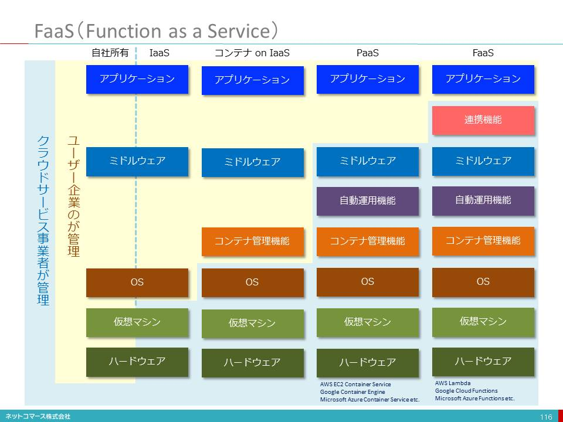
- APIエコノミー
- 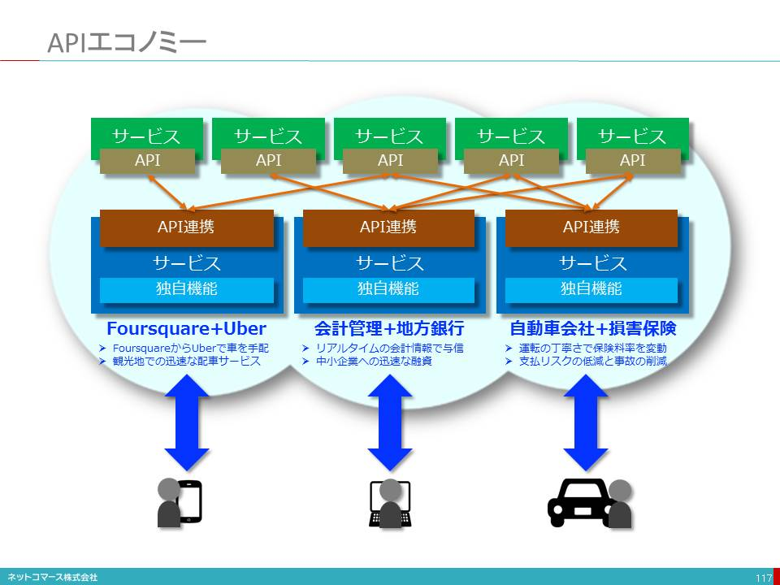
- FinTech
- 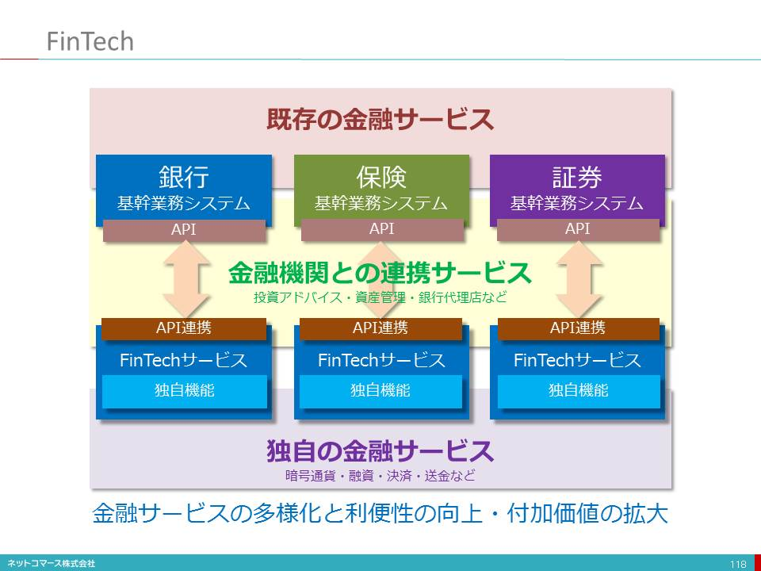
- お金は生活においてもビジネスにおいても欠かすことのできない存在です。その貸し借りや決済、通貨の流通は、絶対的な安心や安全が担保されなくてはなりません。そのために国家のお墨付きや企業規模と言った「権威」によってそれが保証されていました。しかし、ITの進化によりお金のやり取りがリアルタイムで把握できるようなった。
- ソーシャル・メディアなどに個人が実名で様々な考えを表明したり行動が公開されたりと、借り手のことを詳しく知る新たな手立てが生まれた。
- 暗号化や匿名化の技術も進歩しインターネットでも安全、安心に取引できるようになった。
- このような変化に呼応してお堅いとの印象もある銀行が、残高照会、入出金明細照会、口座情報照会といった情報を、インターネットを介して提供するための標準化への取り組み「BIAN（Banking Industry Architecture Network）」にも参加し、情報の提供をはじめようとしています。
- さらに、それらデータを分析する手段として人工知能が使えるようになり、人間が手間をかけてデータを精査することなく信用の度合いを自動的に評価できるようになりました。また、このような仕掛けにより少額の取引でも十分に利益の出るビジネスや新たな金融サービスができるようになったのです。
- また、インターネットを利用して金融機関に書類を提出しなくても手続きができるようになり、その利便性は大いに増し利用者の裾野を拡げています。
- また、資金運用においても膨大な市場データを様々な角度から分析し、個人の要望にもきめ細かく答えられる人工知能やそれをいつでも、どこでも、わかりやすい画面で利用できるスマートフォンやWeb技術の進化もまた、FinTechビジネスの拡大に拍車をかけています。
- 「安全や安心が価値」というこれまでの常識から、「便利で手軽という価値」というこれからの新しい常識を利用者が求めるようになり、金融はいまあらたな可能性を求めて大きく変わり始めています。
- 運用技術者からSREへ
- 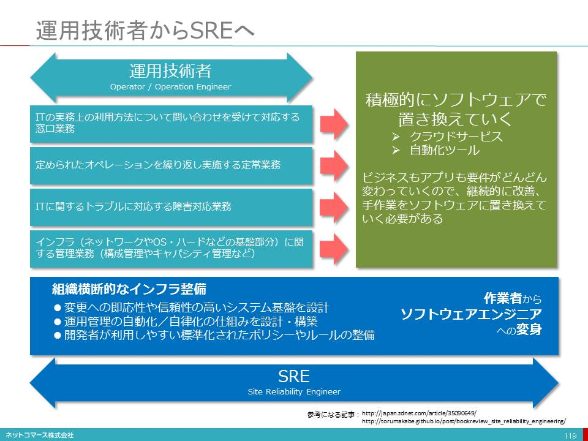
- インフラにおける日々の運用業務は、クラウド事業者に任せられるようになりました。またインフラを使うために必要な設定は、クラウドであればツールやAPI（Application Program Interface）を介して使えるようになり、アプリケーション開発者にもできる時代です。
- このような仕組みが、先に紹介したインフラを設定する全ての手順をコード化する「インフラストラクチャー・アズ・コード」です。
- こんな時代に運用技術者に求められる役割も大きく変わろうとしています。例えば、これまで求められてきた業務は、次のような内容でした。
- ITの実務上の利用方法について問い合わせを受けて対応する窓口業務
- 定められたオペレーションを繰り返し実施する定常業務
- ITに関するトラブルに対応する障害対応業務
- インフラに関する管理業務（構成管理やキャパシティ管理など）
- このような業務は積極的にクラウド・サービスや自動化ツールに置き換え、どんどん変わるビジネス要件に柔軟・迅速に対応できるインフラ環境を作ることへと、業務の重点を移してゆくことが求められています。
- 具体的な業務は次のようなものです。
- 変更への即応性や信頼性の高いシステム基盤を設計
- 運用管理の自動化/自律化の仕組みを設計・構築
- 開発者が利用しやすい標準化されたポリシーやルールの整備 など
- このような役割を担う技術者は「SRE（Site Reliability Engineer）」と呼ばれています。彼らは、開発者とサービス・レベルの目標値を共有し、協力しながら開発やテスト、本番稼働に必要なインフラ環境をすぐに使える組織横断的な仕組みを作ることに取り組みます。
- インシデント対応やインフラの安定稼働といった守りの役割から、加速するビジネス・スピードの変化に対応し「ビジネスの成果に貢献する」することへと、運用技術者の役割は、大きく拡がろうとしているのです。